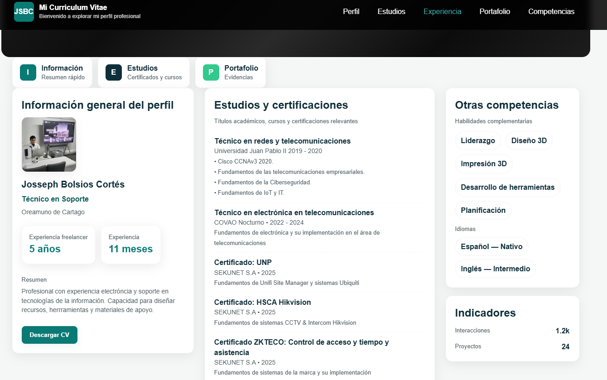
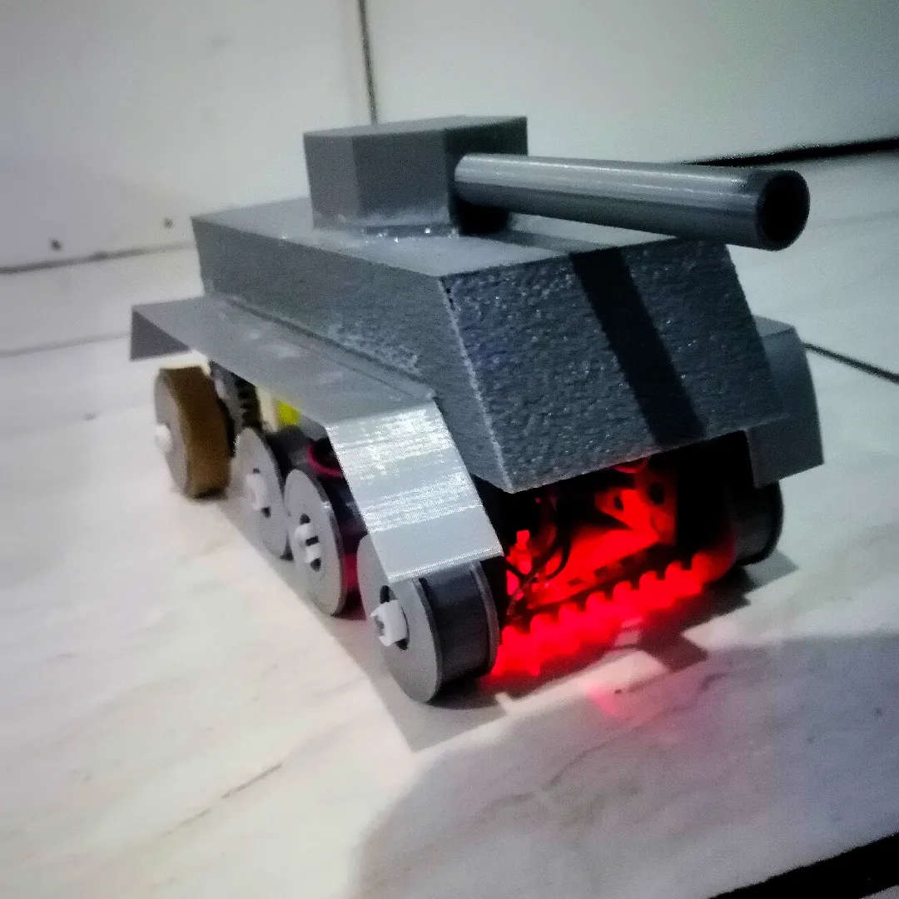

SEKUNET S.A. — Evolución en Organización, Procesos e Innovación
Más allá del diagnóstico electrónico de laboratorio y el soporte multimarca en seguridad electrónica, durante mi etapa más reciente he asumido responsabilidades estratégicas de organización y mejora continua, transformando la manera en que el departamento opera, documenta y atiende requerimientos:
Diseño y estructuración de flujos de trabajo claros y medibles para la recepción, diagnóstico técnico, escalamiento de soporte y control de garantías, logrando orden operativo y trazabilidad total.
Identificación proactiva de cuellos de botella en la operación diaria, formulando e implementando reformas en los procesos internos para reducir tiempos de respuesta y errores recurrentes.
Entrenamiento directo a compañeros de trabajo, nuevo personal e integradores externos en plataformas Hikvision, ZKTeco, Ubiquiti y MikroTik, nivelando hacia arriba las competencias del equipo.
Desarrollo de soluciones propias que nacen de necesidades reales detectadas en campo y taller, convirtiendo problemas cotidianos en herramientas digitales que agilizan el trabajo de todo el equipo.
Herramientas y Casos de Éxito Destacados
Ver los 8 proyectos →


